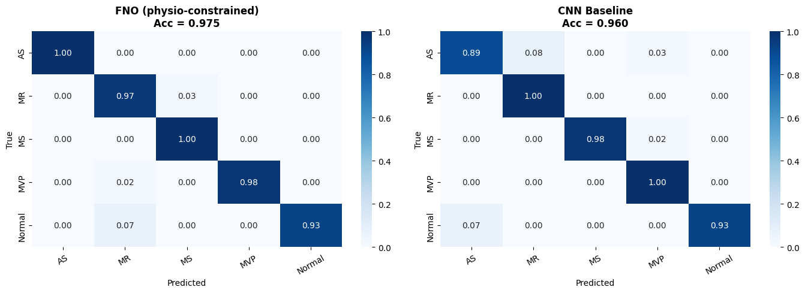
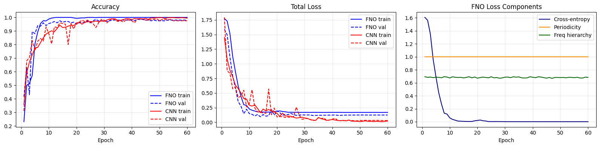
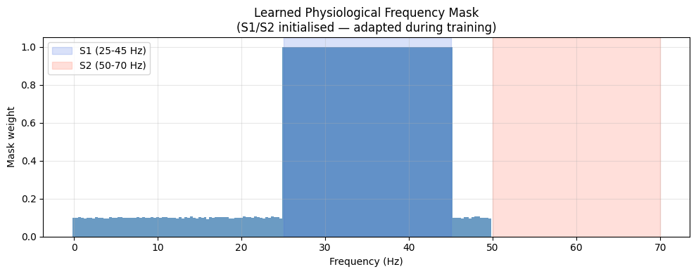
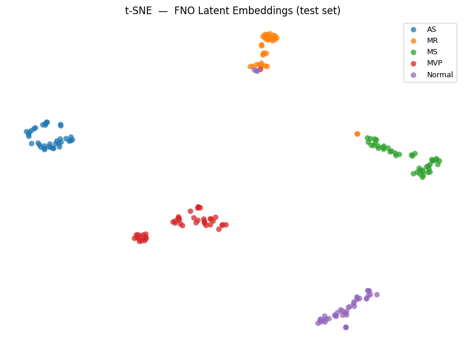

Physical AI · Biomedical Signals
PI-FNO: physics-informed
heart sound diagnosis.
A Fourier neural operator that reads raw phonocardiograms and classifies five heart conditions, with the known physiology of heart sounds built into the architecture, the initialization and the loss.
Valvular heart disease affects millions of people, and diagnosing it by auscultation takes long training and has low agreement between examiners. PI-FNO classifies Aortic Stenosis (AS), Mitral Regurgitation (MR), Mitral Stenosis (MS), Mitral Valve Prolapse (MVP) and Normal from a raw phonocardiogram (PCG). Instead of treating heart-sound classification as pure pattern recognition, the model encodes what is known about cardiac acoustics. The same design philosophy I use for constitutive modeling in mechanics applies here: put known structure into the architecture, and enforce inequalities as constraints.
Architecture
The input is a 3 s recording at 22,050 Hz (66,150 samples). It passes through a learnable frequency mask, a lifting layer to 64 channels, four Fourier blocks, global pooling, and a small head that produces five class scores. In each block, a spectral convolution acts on the retained Fourier modes and is added to a pointwise bypass:
where \( \mathcal{F} \) is the Fourier transform, \( R \) a learned complex weight acting on the lowest \( M=150 \) modes, which cover the diagnostically relevant band up to about 1 kHz, \( W \) a pointwise linear map, and \( \sigma \) the GELU activation. Each block also includes instance normalization.
Physiology built in
Frequency mask. A learnable soft band-pass filter acts on the input spectrum. Its weights \( m(f)=\mathrm{sigmoid}(\theta_f) \) stay in \( (0,1) \) by construction. They are initialized from the known first and second heart sounds, with weight 1.0 in the S1 band (25–45 Hz) and S2 band (50–70 Hz) and 0.1 elsewhere, and then trained freely.
Physics-informed loss. Training combines cross-entropy with two physiological terms,
The periodicity loss encourages energy at the heart-rate fundamental (1–5.3 Hz) and its harmonics. The hierarchy loss enforces the universal fact that S1 carries at least as much energy as S2, as a hinge penalty:
It has zero gradient whenever the constraint is satisfied, like an inequality constraint in mechanics.
Data
1,000 recordings, 200 per class, split 60/20/20 into training, validation and test sets with a fixed seed (600/200/200). Recordings are zero-padded or trimmed to 3 s and scaled to \( [-1,1] \). The PCG data come from the repository of Yaseen Khan et al., associated with S. Kwon, Classification of Heart Sound Signal Using Multiple Features, Applied Sciences 8(12), 2344 (2018).
Results
On the held-out test set the FNO reaches 97.5% accuracy, against 96.0% for a conventional CNN baseline on log-Mel spectrograms. The CNN fits the validation set slightly better (99.5% vs 98.5%) but generalizes less well.
| Model | Val acc | Test acc |
|---|---|---|
| FNO (physiology-constrained) | 98.5% | 97.5% |
| CNN baseline (log-Mel) | 99.5% | 96.0% |

Per class, the FNO classifies Aortic Stenosis perfectly (F1 = 1.00, against 0.90 for the CNN), which matters for early detection. Mitral Regurgitation is the hardest class (F1 = 0.92), because its spectrum overlaps with other murmurs.

Interpretability
Because the mask acts on the spectrum with physical units (Hz), it can be read directly. After training it keeps the S1 band at full weight and leaves the other low-frequency modes near their initial value of 0.1. No post-hoc attribution method is needed.

A t-SNE projection of the 64-dimensional embeddings shows well-separated clusters. Normal recordings are clearly isolated from the pathologies, which is what a screening tool needs. Partial overlap of MR with neighboring clusters matches its lower precision.

Code
The code, trained notebook, results and lecture notes are open source (MIT license) at github.com/miladshirani/PI-FNO ↗. The notebook runs on a free Colab GPU.